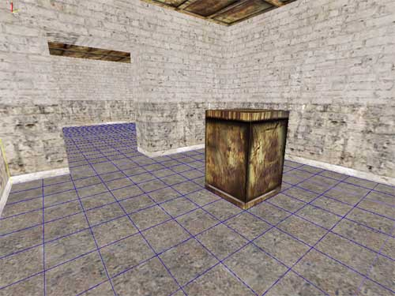
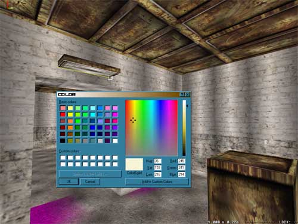
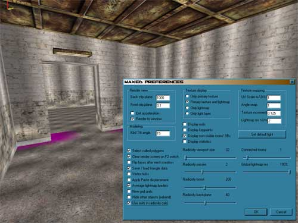
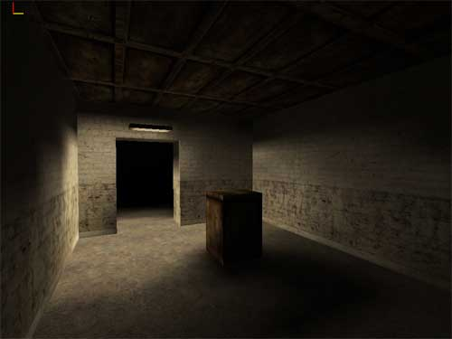
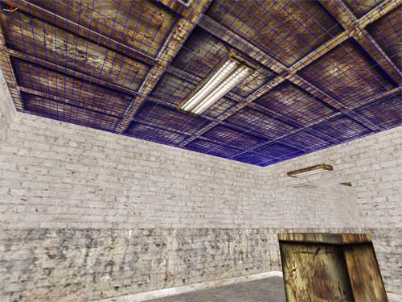
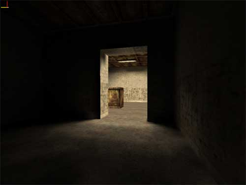

Let's continue working with the level you've made. Here
is the level file after adding a couple of lights. We'll keep things on a
practical level so can you just get started with lighting and develop an understanding of what you can do with
it. First, We will add one piece of geometry on the floor so something to
cast shadows. Let's make a box...
1. Hit space to go to movement mode, and
move to inside one of the rooms positioning yourself so that you see the
floor well.
2. Align the grid to the floor (grid size is up to you): In F4-mode,
activate the floor polygon by pointing at it, and hit A. If you
want to make sure that the grid lines match the walls, switch to F3-mode,
point one of the wall corners so that it highlights, and press A
again.
3. Now draw the box (or say, a pillar) to any shape and size you
please and extrude it. Depending on if you had "preferences/flip faces after
mesh creation" selected or not, the box is now either object-like (polys pointing
outward) or room-like (polys pointing inward). Obviously we need to make
it an object, so if the polys are pointing in, flip them: go to F4-mode,
point at the box it to make sure it's highlighted and press Ctrl-F.
4.
To use the same texture as the ceiling, you can either select it from the
materials menu, or just grab it from the ceiling (in F6-mode, point
the ceiling and press G). Since you now know the basics of
texturing you can try for yourself and see what kind of a box you come up
with.
5. Remember to group the box to the room: Go to F5-mode, LMB
click the box, press G and LMB click the room it's in. Rooms are always the top-most objects in the hierarchy tree and all other objects have to be below them in some order.

As you can
see, simple shapes inherit much to their looks just from the way the
texture is placed. With this texture placement it looks as if the box had
an extruding top and bottom.
As lighting calls for a lamp mesh, it is the obvious choice
for our next piece of furniture. Following the above sequence, make a
light element above the door and texture it. Note that besides the color
that you assign to a light, the actual color of the light is also affected
by its texture; if you assign white color to a light that has a blue
texture, the resulting light color will pretty much be blue.
When you have your light element in place, it's time to add the actual
light. Also turn on the rendering of the lightmaps. To do that, open
preferences and from the "texture display" -radio
buttons, check "primary texture and lightmap". Now you'll
see both the texture and the lightmap on top of it.

In F6-mode, point at the surface of your light element that you
want to cast light, press L and pick any color you like. In
general, plain, almost white hues work well, since the light will gather a
lot of color from both the texture of the light surface, and any
successive surfaces it bounces from.

1. Open preferences and set
"radiosity viewport size" to 32, "radiosity passes" to
2 and "radiosity boost" to 200. Click OK. These values are
quite enough to show the resulting amount and placing of light and shadow.
2. Go to F5-mode and press CTRL-E
to autogroup all objects to the rooms they are in, in case you left
something ungrouped.
3. Still in F5-mode, press ESC (to
clear selection), switch to move mode (SPACE) and press R
(start rendering)
4. Click "NO" when asked if you want to use
the preview algorithm. This level is very small and with the above
settings won't take more than couple of minutes to render on a ~700MHz
machine.
MaxED goes to the wireframe mode after it has rendered the lightmaps, so when it’s done, switch back to texture rendering mode (F2) to see the results. The level should look something like this:

Just how well you managed to get this kind of results doesn't matter, the
important thing is that you become accustomed to how the lights work.
Ok you've done well. I'll add one more light element and you can just
watch.

This
one will go to the ceiling killing a lot of the shadows. It's also a bit
longer than the door light

As you can see, from the room the lamps are in, shadows are now practically gone, due to
the extra amount of light coming straight down from the new element. Since there are no light elements in the other room, the light can be seen "pouring" in through the doorway, creating a nice effect.
You can now use NumPad / to cycle
Textures/Textures+Light/Lighting modes in the render display,
or use the Preferences dialog. Note however, that while in small maps
it's faster to use numpad / to cycle the modes, in larger maps the
transition takes time and in the lack of immediate response, it might be
unclear whether you pressed / the correct amount of times and it is
simpler and oftentimes just quicker to open preferences (CTRL-P) and
select the right mode.
Also try rendering with the preview lighting. It doesn’t give you as good results, but it’s a lot faster. Start rendering as you did before, but choose “Yes” to the question about preview
lighting and accept the default shoot amount, it's good for mostly all
occasions.